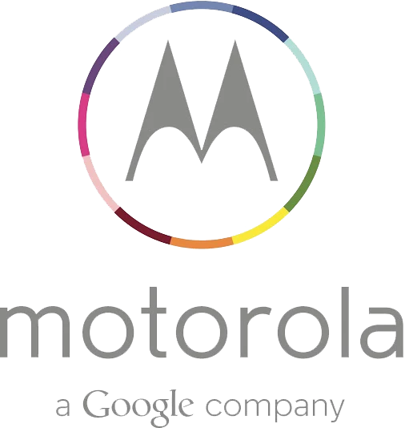
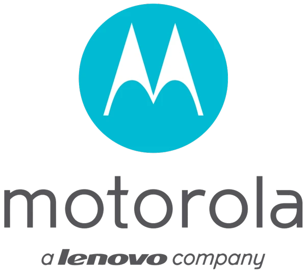
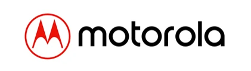
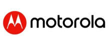

모토로라 솔루션스 Motorola Solutions
모토로라 솔루션스(Motorola Solutions)는 공공안전 기관과 기업을 대상으로 핵심 통신, 영상 보안, 지휘센터 기술과 관련 서비스를 제공하는 미국 기술 회사이다.
최종 업데이트

모토로라 솔루션스는 어떤 브랜드인가
이 회사는 시카고에 본사를 두고 안전과 보안에 필요한 제품과 서비스를 공급한다. 사업은 핵심 통신용 LMR 장치와 네트워크, 음성·영상·데이터를 연결하는 지휘센터 기술, 영상 보안의 세 범주로 구성한다.
영상 보안 부문은 장치와 AI 기반 분석, 관리 도구를 제공한다. 세계 각지의 운영센터 네트워크를 통해 관리형 서비스와 지원도 제공한다.
공공안전 기관과 기업이 주요 기술 사용 주체이며, Motorola, Inc.의 법적 승계 회사로 자리한다.
모토로라 솔루션스는 어떻게 시작되고 성장했나
이 회사는 2011년 Motorola, Inc.가 Motorola Mobility와 Motorola Solutions로 분할되면서 설립했다. 공공안전과 기업 보안 사업을 맡아 NYSE에서 MSI라는 종목 기호로 독립 거래를 시작했다.
같은 해 네트워크 사업부를 Nokia Siemens Networks에 $975 million 현금으로 매각했으며 약 6,900명의 직원과 여러 통신 제품·서비스의 고객 지원 책임을 이전했다. 2014년에는 견고형 모바일 컴퓨터, 태블릿, 바코드 스캐너로 구성된 기업 사업을 Zebra Technologies에 $3.45 billion 현금으로 매각했다.
모토로라 솔루션스의 브랜드 아이덴티티는 무엇인가
공공안전과 기업 보안에 초점을 맞춰 핵심 무선 통신, 지휘센터, AI 기반 영상 보안을 하나의 사업 체계로 제공한다.
모토로라 솔루션스의 대표 제품과 서비스는 무엇인가
핵심 통신 사업은 공공안전 업무용 LMR 장치와 네트워크를 제공한다. 지휘센터 기술은 음성, 영상, 데이터 흐름을 연결하며 영상 보안 사업은 장치, AI 기반 분석, 관리 도구를 구성한다.
2012년에는 공공안전 LTE, 셀룰러, IP, P25 네트워크 연결 기능과 견고한 하드웨어를 결합한 휴대형 임무 핵심 무전기 LEX700을 출시했다. 또한 세계 각지의 운영센터를 기반으로 관리형 서비스와 지원을 제공한다.
모토로라 솔루션스는 지금 어떤 상태인가
이 회사는 미국 기업이며 시카고에 본사를 두고 Motorola, Inc.의 법적 승계 회사로 운영한다. 분할된 휴대전화 사업 Motorola Mobility는 현재 중국 기술 회사 Lenovo의 일부를 구성한다.
2015년에는 Silver Lake Partners로부터 $1 billion 투자를 받았으며, 거래에 따라 Silver Lake가 이사회 의석 두 자리를 확보했다.
모토로라 솔루션스 로고는 어떻게 변해왔나
- 1955–2013

2013–2014
2014–2015- 2015–2017

2017–2018
2018–2019
시기는 위키데이터 로고 기간 또는 위키미디어 커먼즈 파일 정보 기준입니다. 이미지를 누르면 원본 파일과 라이선스를 볼 수 있습니다.
자주 묻는 질문
모토로라 솔루션스는 어느 나라 브랜드인가요?
모토로라 솔루션스는 미국의 기술·전자 브랜드입니다.
모토로라 솔루션스는 언제 설립되었나요?
모토로라 솔루션스는 2011년 설립되었습니다.
모토로라 솔루션스의 브랜드 아이덴티티는 무엇인가요?
공공안전과 기업 보안에 초점을 맞춰 핵심 무선 통신, 지휘센터, AI 기반 영상 보안을 하나의 사업 체계로 제공한다.
모토로라 솔루션스의 대표 제품은 무엇인가요?
핵심 통신 사업은 공공안전 업무용 LMR 장치와 네트워크를 제공한다.
모토로라 솔루션스는 현재 어떤 상태인가요?
이 회사는 미국 기업이며 시카고에 본사를 두고 Motorola, Inc.의 법적 승계 회사로 운영한다.
모토로라 솔루션스의 본사는 어디에 있나요?
모토로라 솔루션스의 본사는 시카고에 있습니다(위키데이터 기준).
모토로라 솔루션스의 공식 웹사이트는 어디인가요?
모토로라 솔루션스의 공식 웹사이트는 http://www.motorolasolutions.com/ 입니다.
출처와 검증
모토로라 솔루션스 관련 참고: 공식 웹사이트 · 위키데이터 Q634815 · 한국어 위키백과 · 영어 위키백과. 브랜드명은 한글과 원어를 함께 표기하되 데이터에 없는 표기는 만들지 않습니다. 기원 국가·설립연도는 검수된 정의문에서 확인된 값을 우선하고, 없을 때만 공식 웹사이트 URL이 일치하는 위키데이터 개체의 값을 씁니다. 탄생일의 월·일은 위키데이터, 위키백과 정보상자, 본문 가운데 같은 연월로 확인되는 값만 싣고, 출처끼리 다르면 싣지 않습니다. 위키데이터 값은 2026-09-12 기준입니다.